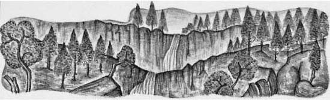

Listen to Part 1:
Người Hà Lan đến Bắc Mỹ từ Hà Lan vào đầu thế kỷ XVII. Họ đến sinh sống tại một vùng đất mới—họ là những người định cư. Nhiều người định cư tại khu vực xung quanh Sông Hudson, ở phía đông của vùng đất này. Nhưng vào thời điểm câu chuyện Truyền thuyết về Rip Van Winkle bắt đầu, gần hai trăm năm sau đó, vùng đất này ở Bắc Mỹ là thuộc địa của Anh. Vùng đất này thuộc sở hữu của Anh. Thuộc địa này do Vua George Đệ Tam cai trị, ông là vua của Anh từ năm 1760 đến 1820. Một số người ở Bắc Mỹ hài lòng về điều này. Họ thích vua Anh—họ trung thành với Vua George. Nhưng nhiều người khác không muốn vùng đất của họ do Anh cai trị. Họ muốn sống trong một đất nước độc lập. Họ muốn có chính phủ của riêng họ và luật pháp của riêng họ. Có một cuộc chiến giữa những người này và quân đội Anh. Người Mỹ đã giành chiến thắng trong cuộc chiến, và quân Anh đã rời khỏi thuộc địa. Vào cuối câu chuyện của Rip Van Winkle, ông đang sống trong một đất nước độc lập—Hoa Kỳ. Đất nước này có tổng thống, không phải vua. Tổng thống đầu tiên của Hoa Kỳ là George Washington.
Câu chuyện còn lại trong cuốn sách này, Truyền thuyết về Thung lũng Ngủ, diễn ra sau cuộc chiến với Anh, vào đầu thế kỷ XIX.
